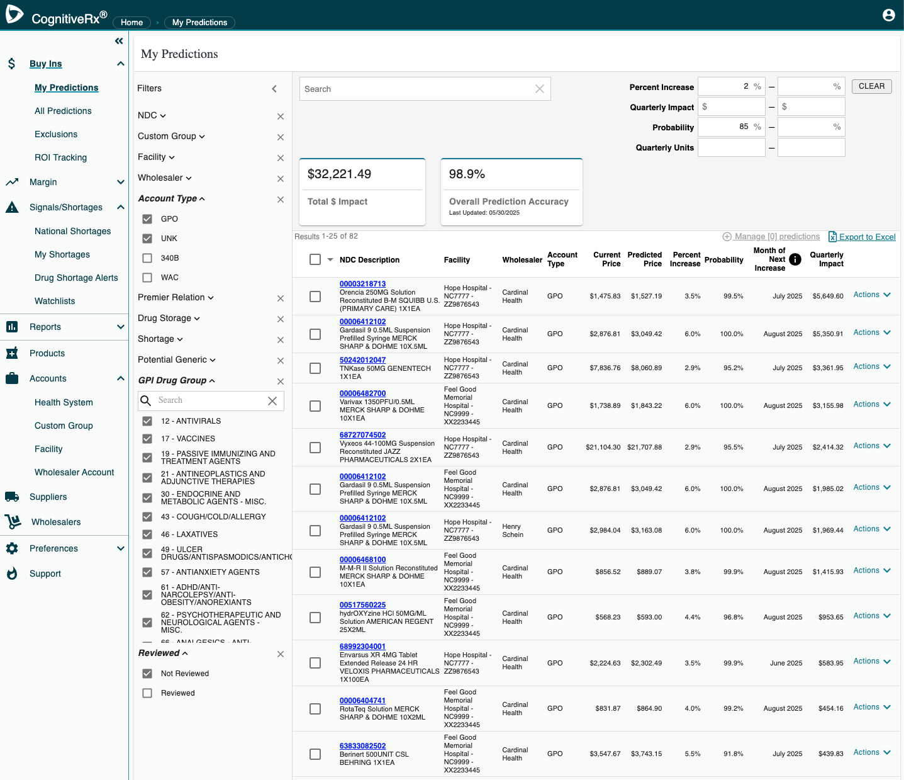
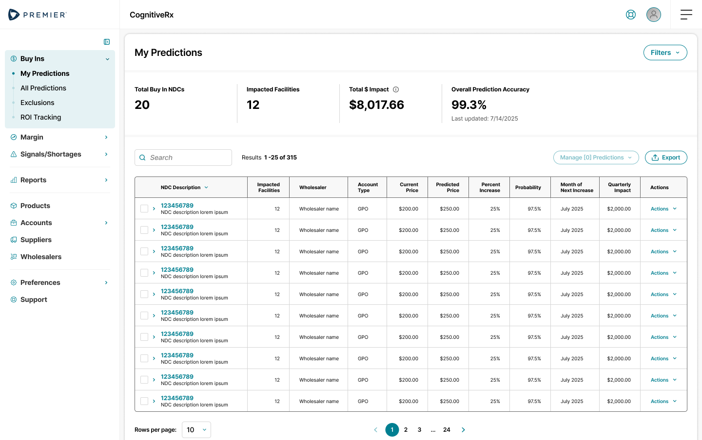
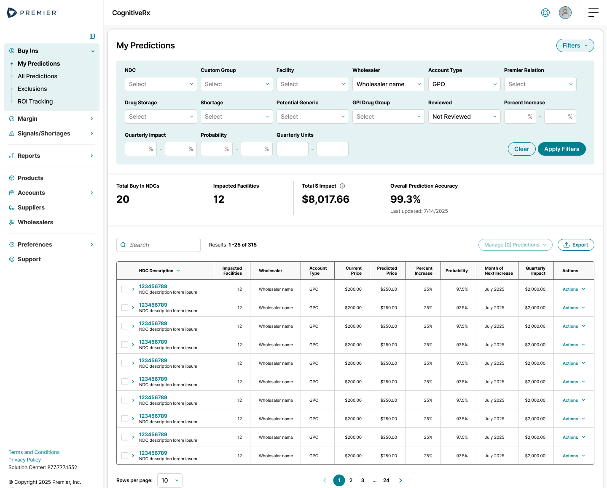
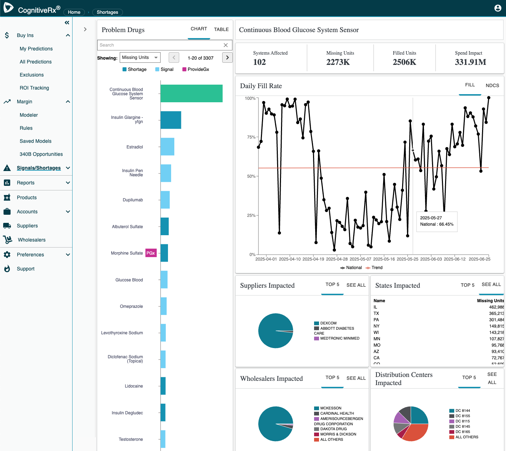
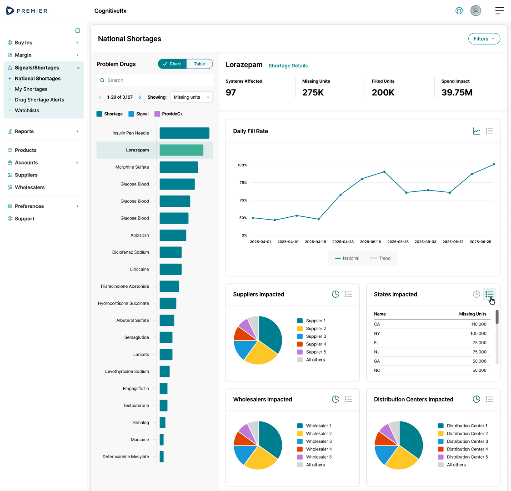
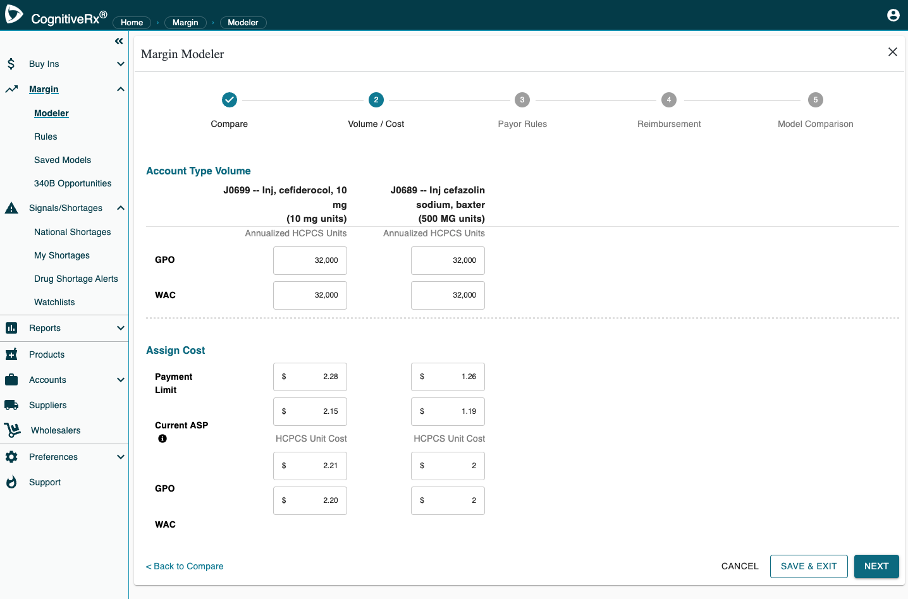
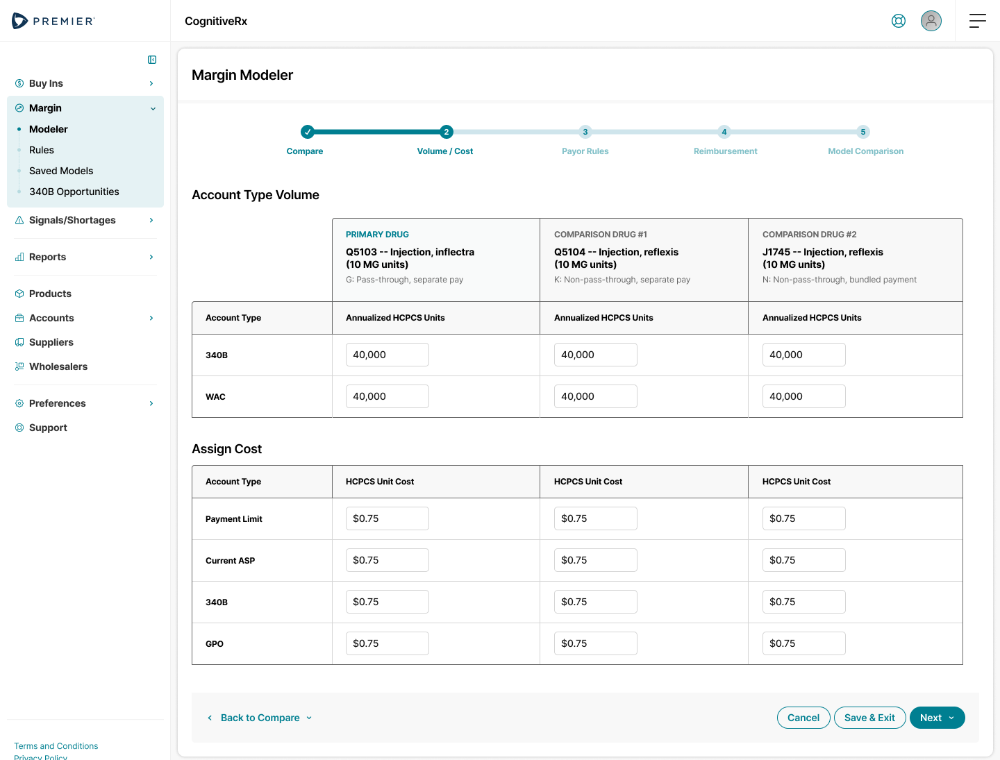
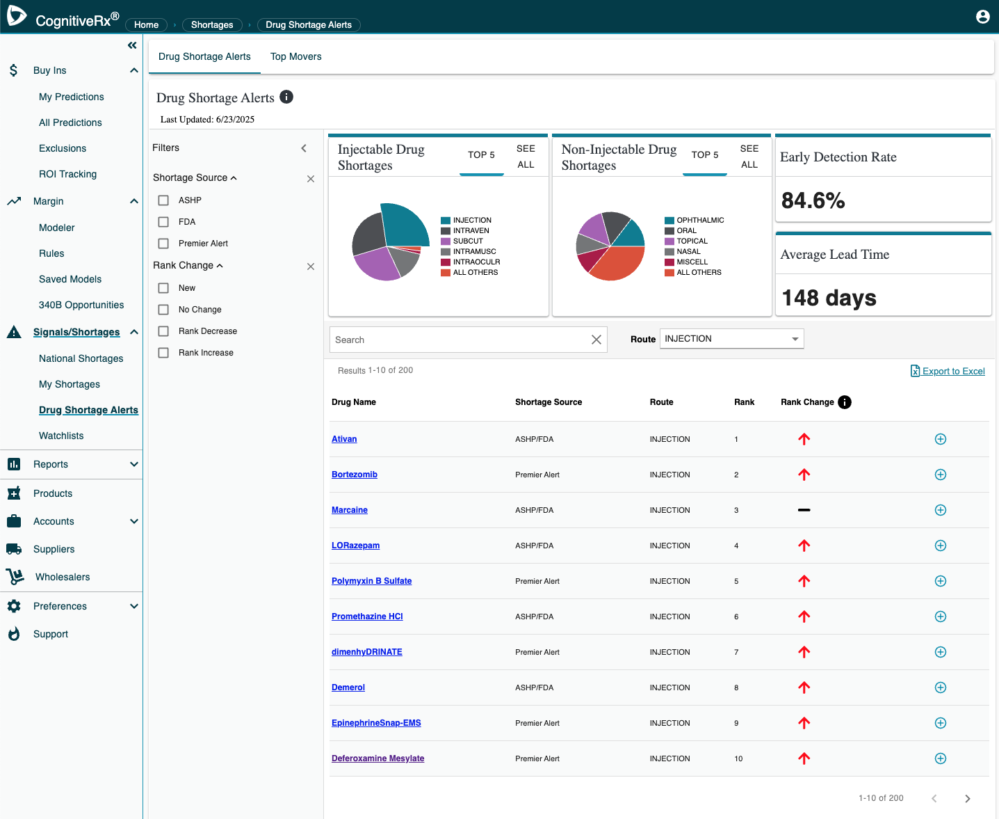
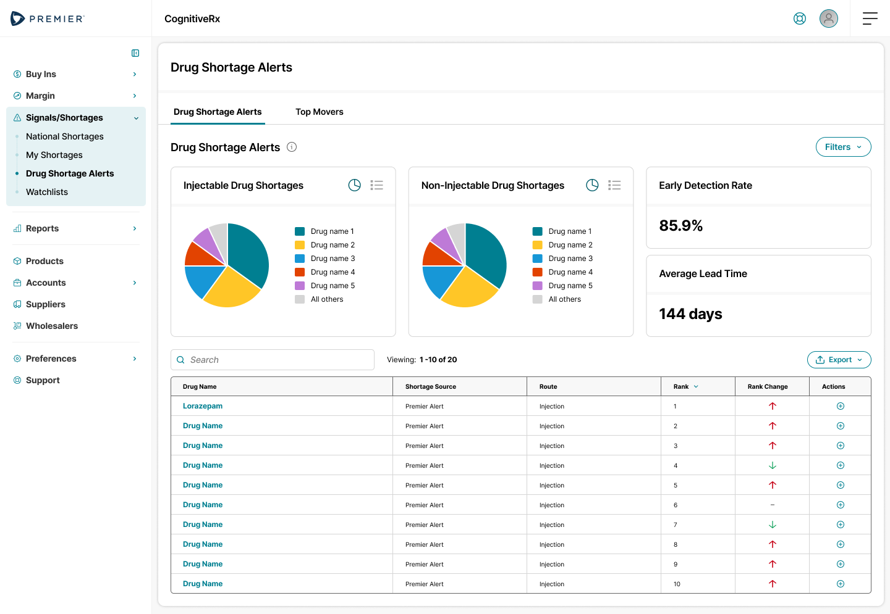

CognitiveRx predicts drug price increases and flags shortages before they hit. I worked with end users and pharmacy SMEs to streamline its screens, reduce cognitive load, and bring the whole product onto the Premier Design System.
Simplify each screen so the predictions and signals lead, and supporting controls step back.
Remove competing styles, always-open panels and noise so users can scan, compare and decide faster.
Rebuild every screen from Premier Design System components so CognitiveRx looks and behaves like the rest of the portfolio.
How might we let pharmacy teams act on an AI prediction in seconds, without losing any of the data depth they rely on?
Captured every legacy screen and mapped where patterns, type styles and controls diverged across modules.
Worked with end users and pharmacy SMEs to learn which data drives decisions and which elements could move out of the way.
Rebuilt 36 screens from Premier Design System components, side by side with the legacy versions for review.
Filters and settings appear when someone asks for them. The rest of the time, the data gets the full width of the page.
Each page opens with a short row of KPIs, so the headline is clear before anyone reads a table.
One typeface, sentence case and a single link style replace serif titles, all-caps labels and underlined blue links.
Grids, steppers, tabs, cards and buttons come from the Premier Design System, so a pattern learned once works everywhere.
This is where teams act on predicted price increases. The legacy screen kept 13 filter groups open on the left at all times and pushed range filters into the header, leaving the predictions table squeezed in between.



A ranked list of problem drugs drives a detail view of fill rate and supply impact. The legacy version mixed serif and sans-serif type, tab styles and all-caps legends, and its charts used inconsistent color.


A five-step wizard compares a drug's margin against alternatives. In the legacy form, labels drifted out of line with their inputs, so it was hard to tell which value belonged to which account type.


Alerts rank the drugs most at risk. The redesign keeps every data point but trades the side filter panel, mixed card headers and underlined links for a calmer layout.


Only the active section expands, with a clear current-page marker, instead of every menu open at once.
Every screen shares the Premier header, a page title with its primary action, and a content card.
One filter pattern with Clear and Apply replaces side panels and header range inputs.
Tables share headers, row actions, pagination, rows per page and export placement.
Charts use the design system data colors and a consistent chart/table toggle.
Sentence case and a single typeface replace serif titles, all-caps labels and underlined links.
| Area | Status |
|---|---|
| Premier Design System alignment across all modules | 36 screens designed |
| Before-and-after review with end users and SMEs | Complete |
| Outcome metrics | To be measured |
Hiding controls until they're needed cut clutter without removing a single data point users depend on.
Pharmacy experts were the fastest route to knowing which numbers lead a decision and which can wait.
Placing each new screen beside its legacy version made reviews concrete and showed what had changed at a glance.
Each pattern settled on one screen made the next 35 faster to design and easier to learn.